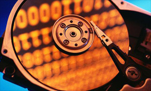
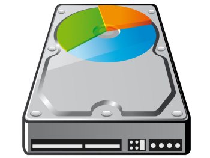
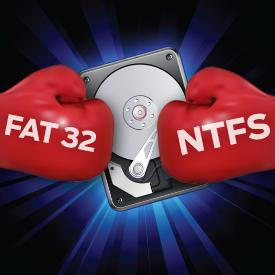
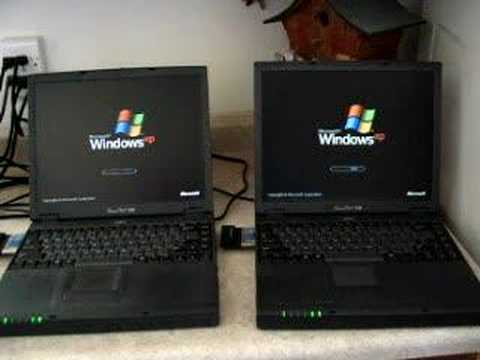

FAT est un système de fichiers devenu un standard de l'industrie. Il est simple et robuste, offre de bonnes performances dans des environnements simples, mais n'atteint pas la fiabilité et l'évolutivité de certains systèmes de fichiers modernes. Il est cependant pris en charge par la plupart des systèmes d'exploitation actuels et dans de très nombreux appareils mobiles ou systèmes embarqués. Pour cette raison il est bien adapté aux échanges de fichiers entre les appareils de tous type et ce depuis les années 1980. Conçu en 1977 pour les disquettes par Bill Gates et Marc McDonald pour Microsoft Disk BASIC puis réutilisé dans QDOS , il a été très vite adapté aux disques durs et employé depuis MS-DOS jusqu'à la branche 9x de Windows en évoluant avec la capacité croissante des supports en trois variantes FAT12, FAT16 puis FAT32. Les systèmes Windows suivants, dérivés de la branche NT, utilisent préférablement le NTFS, mais reconnaissent toujours FAT.
FAT était employé sur les disquettes et reste toujours utilisé sur les clés USB, les cartes SD ainsi que dans les très nombreux équipements mobiles qui utilisent ces supports. La spécification DCF demande le support de FAT par les appareils photo numériques. FAT est enfin employé dans la phase de démarrage des systèmes informatiques compatibles UEFI.
Les différentes versions de FAT
- FAT12 : maximum de 212, soit 4 096 clusters de taille fixe (choisie au départ entre 512 octets et 4 Kio). - FAT16 : maximum de 216, soit 65 536 clusters de taille fixe (choisie au départ entre 2 Kio et 64 Kio)- VFAT : Une évolution de la FAT, permettant de gérer les noms longs dans Windows 95 et les versions suivantes. Il s'applique à toutes les versions de FAT (FAT12, FAT16, FAT32…) FAT32 : apparu avec Windows 95 OSR2 (Windows 95B), il supporte un maximum de 228 (268 millions) de clusters de taille variable de 4 Kio à 32 Kio, avec reprise du système VFAT. La taille des fichiers ne peut dépasser 4 Gio.
L'exFAT, apparu avec Windows CE 6.0, est un système de fichiers différent.
Malgré son manque de résistances aux pannes par rapport à ses concurrents, FAT reste en 2010 très utilisé, notamment sur les cartes mémoires pour appareils photo numériques et téléphones mobiles ainsi que sur les clés USB en raison de la simplicité de son implémentation permettant l'utilisation dans des systèmes embarqués ainsi que la compatibilité assurée avec Windows et beaucoup d'autres systèmes d'exploitation (les principaux systèmes actuels reconnaissent le système de fichiers FAT).
Microsoft a tenté en décembre 2003 de déposer un brevet sur FAT, de façon à pouvoir percevoir des droits sur les licences qui auraient été accordées aux fabricants d'appareils électroniques. Mais la demande a été rejetée en septembre 2004. Elle a cependant été validée en janvier 2006, après que Microsoft eut complété son argumentation.
   
Hard Drive Mechanic, site sur le fonctionnement des disques durs - Tous droits réservés. Copyright Mentions LégalesContactez Site Créé par Sébastien BUNEL